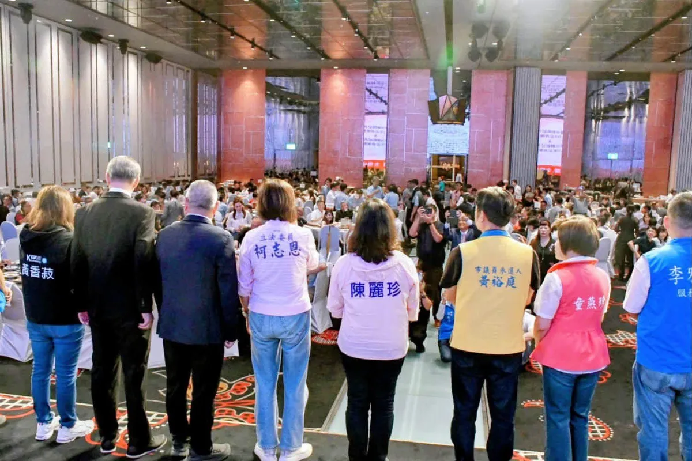

@prof.kochihen:今天是九一記者節，也是我的結婚紀念日。 這幾天很特別，從高雄市新聞及網路記者公會會員大會、高雄市新聞傳播職業工會會員代表大會暨九一記者節活動，到高雄市大高雄新聞記者公會會員大會暨九一記者節活動，一連參與了三場記者節活動，和許多新聞前線的老朋友、新朋友見面。 過去，我也曾站在第一線，擔任旅遊節目主持人、新聞主持人，帶著台灣認識世界，也透過鏡頭讓世界看見台灣。 而現在回頭看，這段新聞工作的經歷，始終是人生中很珍貴的一段旅程。 如果說人生有一個最後的志業，我期盼能夠帶領高雄走向世界，讓世界認識高雄、看見高雄的精彩與可能。 今天也是選戰倒數88天。 88，對我來說，是「爸爸」最重要的數字。因為再忙、再累，都不能忘記陪伴家人的責任。 謝謝你一直是個好老公、好爸爸。 政治路上可以有很多選擇，但對一個家庭來說，陪伴從來不是可以缺席的選項。 今天對我來說格外有意義：是記者節，也是結婚紀念日。一路走來，有工作、有理想，更有最珍貴的家人一路相伴。 祝福所有在新聞第一線堅守崗位、忠實報導，為社會守住真實與正確資訊的媒體記者朋友們，九一記者節快樂！ 也祝自己，結婚紀念日快樂。❤️